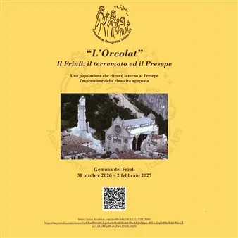

da sab 31 ott a mar 2 feb
La magia del Natale: ''L'Orcolat'' Il Friuli, il terremoto ed il Presepe - laboratori
Una popolazione che ritrovò intorno al Presepe l'espressione della rinascita agognata
 Indicazioni
Indicazioni
- Costi e prenotazioni
- Costo non indicato · Prenotazione non indicata
- Programma
- Programma da verificare. Apri la fonte ufficiale per orari e possibili aggiornamenti.
- In caso di maltempo
- Nessuna indicazione specifica pubblicata.
- Note
- Acquisito automaticamente dalla fonte.
L’EVENTO
Descrizione completa
Il progetto “L’Orcolat” onora il 50’ anniversario del terremoto del Friuli Venezia Giulia offrendo una testimonianza del legame profondo e indissolubile tra la popolazione friulana ed il suo territorio che, in quel Natale 1976, intorno al Presepe rinnovò l’espressione della rinascita agognata.
L’API APS ha inteso realizzare tale celebrazione invitando i massimi rappresentanti dell’arte presepiale dell’Italia settentrionale a presentare una propria opera inedita dedicata all’Orcolat friulano.
La collettiva “L’Orcolat” oltrepassa il momento della semplice esposizione dell’opera artistica per presentare lo smarrimento, la paura, il dolore, il lutto che la scossa sismica genera nella sua distruzione; la rassegna, al contempo, accompagna ognuno alla riscoperta della forza interiore di ogni essere umano che ci permette di non restare impietriti dall’angoscia ma capaci di rinnovare l’impegno verso la vita, la rinascita.
Quella vita nuova, quella ri-nascita che il Presepe rappresenta, racconta, condivide.
Unitamente alla rassegna espositiva, per l'intero periodo dell'esposizione, sarà attivo un servizio di visite su prenotazione ed attività laboratoriali dedicate a bambini e adulti previo prenotazioni.
GIORNATE E ORARI DI SVOLGIMENTO :
Visite guidate su prenotazione per gruppi da 10 a 15 persone
DURATA DELLA SESSIONE DI ATTIVITÀ:
Visite guidata da 60 minuti
FASCIA DI ETÀ DEI BAMBINI / RAGAZZI A CUI È RIVOLTA L’ATTIVITÀ:
Bambini e ragazzi dai 6 ai 13 anni
Costo previsto € 5,00 a persona
PRENOTAZIONE OBBLIGATORIA: Prenotazioni al 3516307359
IL PROGRAMMA
Programma e orari
Appuntamenti raccolti dalle fonti elencate. Dove manca un orario, non è ancora disponibile in questa scheda.
Programma pubblicato
- Dal 2026-10-31 al 2027-02-02
INFORMAZIONI UTILI
Prima di partire
- Controllare la fonte prima di partire.
ORGANIZZAZIONE